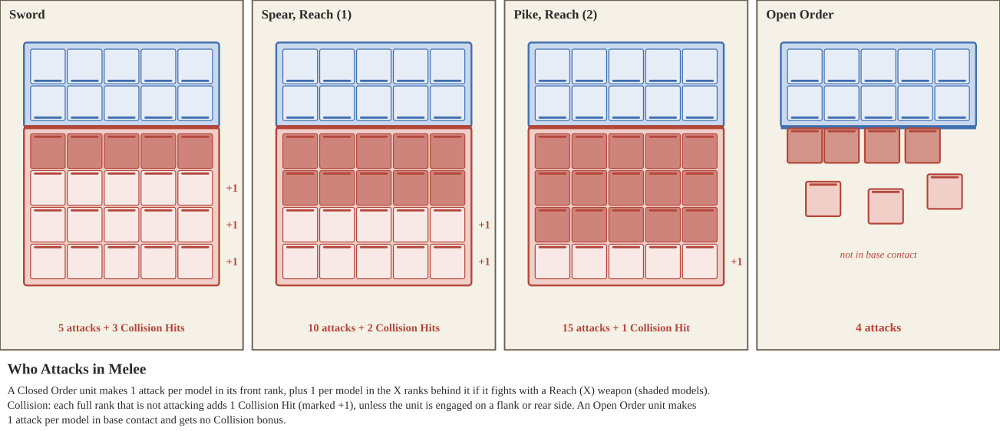
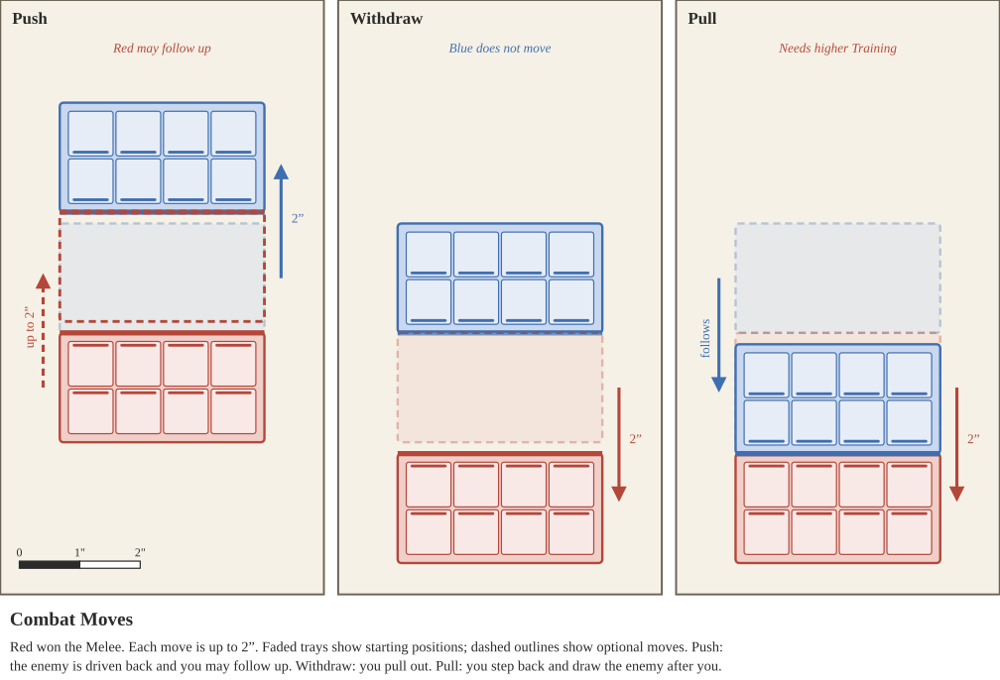

Begin the Combat Phase by identifying which Weapons the units will be using. Players take turns selecting which Weapons their units will use, in order of the longest weapon available to them. If their longest weapons are the same Length, they choose in Initiative order. For example, a unit with long Pikes must decide between their Pikes and Daggers before the enemy unit decides between the Javelins and Swords they have available.
Unless specified otherwise, all models in a unit must select the same weapon to attack during this Combat Phase, starting with the unit that selected the longest weapon.
The exception is a weapon profile that says it may be used in conjunction with another, such as a chariot's or cavalry unit's Horses alongside the crew's or rider's weapon. When selecting weapons, the unit may select both profiles together. Each profile makes its own attacks with its own Length, Accuracy, Strength, and abilities, and its rolls are tracked separately. Each profile also strikes at its own Length in the attack order, so a unit may roll one profile's attacks before an enemy strikes and the other's after. Any restrictions on a profile, such as "can only use on Charge," still apply to that profile.
Next, sides will determine how many attack rolls they begin with:

The unit that selected the longest weapon will roll their melee attacks first. If more than one unit is locked in combat is using the same length weapon, they roll one after another in Initiative order, but inflict wounds simultaneously, meaning do not take into the account the wounds inflicted when conducting the other unit’s attacks.
First Blood. Striking first matters, because men cut down before they swing cannot fight back. When a unit strikes, it makes one fewer attack for every model’s worth of Damage it has already suffered from enemy strikes earlier in this Melee: 1 Damage per model for Warriors, Cavalry and Engineers, or the full Health of one chariot or one elephant for Chariots and Elephants. A unit never loses more than half of its attacks this way, rounded down. Attacks from Special Characters are counted and lost like any other attack, but Collision bonus Hits are never reduced. Units striking at the same Length strike simultaneously, so Damage between them does not reduce each other’s attacks.
For each attack, roll 1 six-sided die, rolling all attacks with the same weapon at the same time. If using multiple weapons due to a special ability, track the results of the attack rolls separately. If there are more than two units locked in combat, when rolling attacks the player may divide attacks between multiple enemies as they choose, but track them separately.
| Condition | Effect |
|---|---|
| Attacker is at Weakened or Half Strength | -1 Accuracy |
| Attacker is at Mass Casualties | -2 Accuracy |
| Attacker has Hold Token | +1 Accuracy |
Successful hits from these attack rolls are determined by the Accuracy of the attacking model. There are various penalties that can modify an attacking model’s Accuracy score. Then consult the below table.
| Accuracy | Required Die Result | Accuracy | Required Die Result |
|---|---|---|---|
| 1 | 5+, Lose 3 | 6 | 3+ |
| 2 | 5+, Lose 2 | 7 | 3+, Gain 1 |
| 3 | 5+, Lose 1 | 8 | 3+, Gain 2 |
| 4 | 5+ | 9 | 3+, Gain 3 |
| 5 | 4+ | 10 | 3+, Gain 4 |
The above table will determine the successful Hits from the unit’s attacks. For example, with Accuracy 5, all die results of 4 or greater are successful Hits. When a table result says “Gain X,” roll X extra dice for the unit’s attack. Conversely, when a table result says “Lose X,” roll X fewer dice. A unit can be left with no dice to roll.
Collision. Closed Order units also gain bonus Hits equal to the number of their ranks not contributing attacks, and lose them while engaged on a flank or rear. See Collision under Closed Order Units.
For each successful Hit, the player will now roll to determine successful Wounds. Again, separate Hits that are from different weapons or against different enemy units.
| Condition | Modifier |
|---|---|
| Attacker is at Weakened or Half Strength | -1 Strength |
| Attacker is at Mass Casualties | -2 Strength |
| Defender has Flee Token | +1 Strength |
| Attacker has Charge Token (not in Difficult Terrain) | +1 Strength |
| Cavalry or Chariot attacker has Charge Token (Momentum) | +1 Strength more |
| Attacker has Run Token | -1 Strength |
Successful Hits use the weapon’s Strength score to determine the results of their roll, modified by bonuses and penalties like those on the table above. For each successful Hit then roll 1 six-sided die, rolling all attacks with the same weapon at the same time.
| Strength | Required Die Result | Strength | Required Die Result |
|---|---|---|---|
| 1 | 5+, Lose 3 | 6 | 3+ |
| 2 | 5+, Lose 2 | 7 | 3+, Gain 1 |
| 3 | 5+, Lose 1 | 8 | 3+, Gain 2 |
| 4 | 5+ | 9 | 3+, Gain 3 |
| 5 | 4+ | 10 | 3+, Gain 4 |
Just like the Accuracy Table, the above table will determine the successful Wounds from the unit’s Wound rolls. For example, with Strength 5, all die results of 4 or greater are successful Wounds. Roll one die for each Hit. When a table result says “Gain X,” roll X extra dice. Conversely, when a table result says “Lose X,” roll X fewer dice. A unit can be left with no dice to roll.
Now that all of the successful Wounds have been determined, the enemy unit gets one last chance to save themself from harm, by rolling Armor Saves. Armor Saves are a representation of the defensive ability of the unit’s protective equipment to deflect and absorb blows.
Each unit that has successful Wounds assigned to them will roll 1 six-sided die for each of those successes. Consult the Armor Save Table below to determine successful Saves.
| Total Armor | 0 | 1 | 2 | 3 | 4 | 5 | 6 | 7 | 8 |
|---|---|---|---|---|---|---|---|---|---|
| Armor Save | - | 6+ | 5+ | 4+ | 3+ | 2+ | 2+ | 2+ | 2+ |
For each successful Save, the unit’s armor has protected them from harm. For each failed Save however, the unit suffers 1 Damage, and some amount of Army Morale. Track the amount of Damage a unit has suffered with a visually distinct die or set of counters. Do not immediately subtract this from a Unit’s Health, as the Damage suffered for each unit is needed for the Resolution Step. Keep track of the Damage as each Length strikes, because it reduces the attacks of units that strike later (see First Blood).
After all Damage effects and Morale losses have been accounted for, the Combat Step moves towards Resolution. During the Resolution Step, each player who owns units which suffered Damage will suffer Army Morale, and then check if their units have new penalties due to their Unit Health. Then finally, players who inflicted more Damage in a Melee may make Combat Moves.
Players lose Army Morale when their Armor Saves fail to prevent Damage. For each point of Damage suffered by a unit, the controlling player loses Army Morale equal to that unit’s base Training value. When calculating Army Morale lost this way, ignore any Training bonuses or penalties accumulated during the game.
For each Melee, determine which player has won, starting with the Melee with the greatest total Unit Strength. For each unit a player owns in a Melee, add up the total Damage suffered by those units. The player in the Melee who suffered the least Damage is considered to have won that Melee. If the players suffered equal Damage, the player first in Initiative order wins. Some game effects may modify these calculations.
The player who won the Melee may choose to make a Combat Move with one of their Closed Order units in the Melee. If the player has multiple units in the Melee, they may only choose one of them to make a Combat Move. Open Order units may not make Combat Moves. The player then may choose to have their unit Push or Withdraw. If the unit has a Training value greater than every enemy unit in the Melee (taking into account any current penalties or bonuses), the unit may also choose to Pull.
Every Combat Move is made up to 2”. Neither unit may be moved into base contact with any other enemy unit, and a unit that is in base contact with an enemy unit other than the one it selected may not follow up after a Push or Pull an enemy in. The table below summarizes the three Combat Moves.

| Combat Move | The enemy unit | Your unit |
|---|---|---|
| Push | Closed Order: moves directly back up to 2”. Open Order: its models move up to 2” out of contact, keeping Cohesion. | Closed Order enemy in your front arc: may follow up to 2”. Open Order enemy: does not move. |
| Withdraw | Does not move | Moves directly back up to 2” |
| Pull (Training higher than every enemy) | If it was in your front arc: charges back into contact and Piles In | Moves directly back up to 2” |
Choose one enemy unit in base contact with your unit to Push.
A Closed Order enemy unit moves directly backwards up to 2”. It may not be moved into base contact with any unit that is not friendly to it. If it was in your unit’s front arc and your unit is not in base contact with any other unit, your unit may then follow up, moving directly forward up to 2”. It may move back into base contact with the unit it pushed, but not with any other enemy unit.
An Open Order enemy unit moves its models up to 2” each, so that none of them remain in base contact with your units. They may not be moved into base contact with any unit that is not friendly to them, or out of Cohesion. Your unit does not move.
Your unit retreats out of the Melee, moving directly backwards up to 2”. It may not move into base contact with enemy units.
Your unit may Pull only if its Training is greater than that of every enemy unit in the Melee. Choose one enemy unit in base contact with your unit, then move your unit directly backwards up to 2”, without moving into base contact with enemy units.
If the chosen unit was in your unit’s front arc and your unit is not in base contact with any other unit, the enemy unit then follows. Move it back into contact with your unit’s front as if it had charged your unit, then Pile In. It does not gain a Charge Action Token. If it cannot reach your unit this way, it does not move.
In the Resolution Step, each unit that took Damage in the Melee subtracts it from its Unit Health and checks its Penalty Category. See Damage & Health.